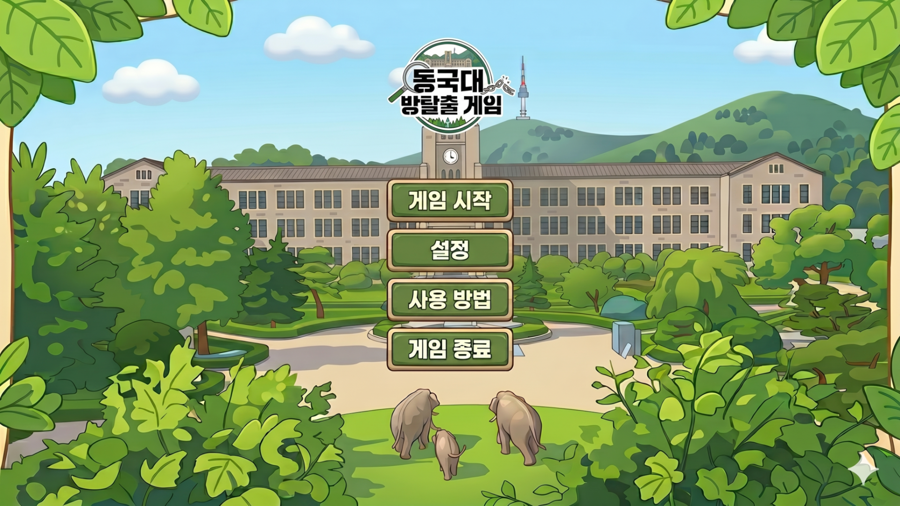
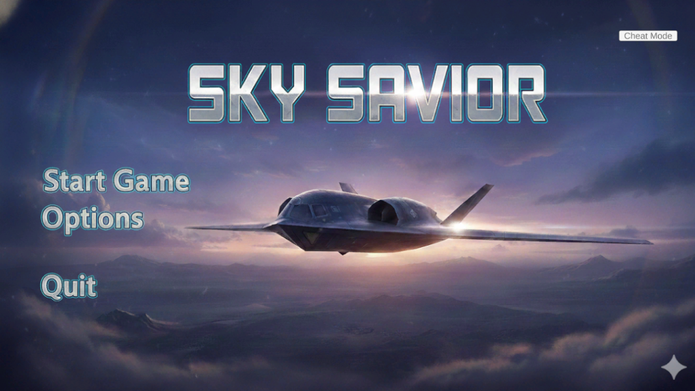
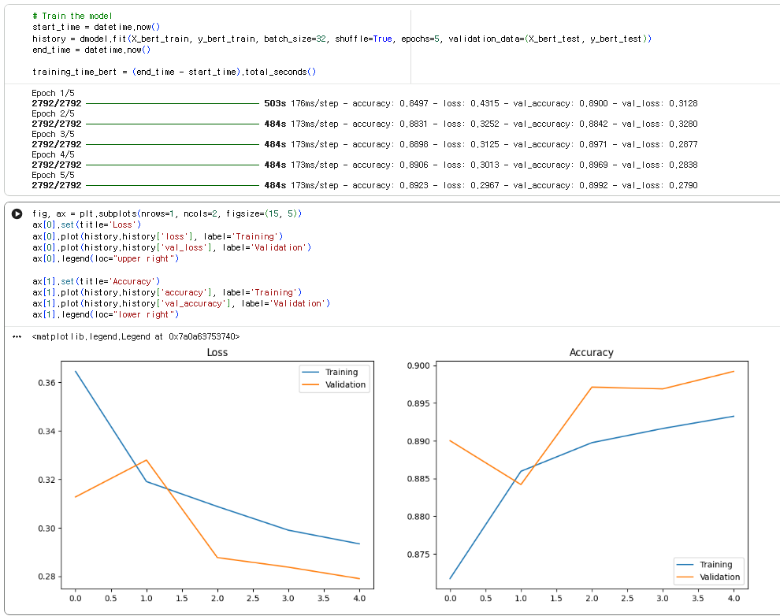
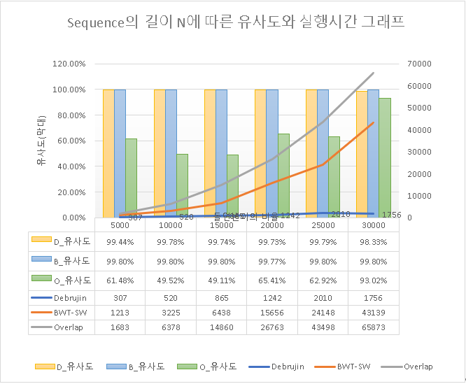

안녕하세요, 박승우입니다.
동국대학교 멀티미디어공학과 21학번에 재학 중이며,
게임하는 것을 좋아하여 게임 기획 및 개발 관련 진로를 꿈꾸고있습니다.
동국대학교 멀티미디어공학과 21학번에 재학 중이며,
게임하는 것을 좋아하여 게임 기획 및 개발 관련 진로를 꿈꾸고있습니다.

Unity 기반 동국대 배경 1인칭 3D 방탈출 어드벤처

Unity 기반의 3D 로그라이트 비행 아케이드 슈팅 게임

RNN(Attention) 및 DistilBERT를 활용한 AG News 텍스트 분류 모델

De Brujin Graph를 활용한 DNA 원본 서열 재구성 알고리즘
관심 있는 카테고리를 선택하여 상세 내용을 확인하세요.

즐겨하는 게임
맛집 리스트

즐겨보는 유튜브 채널